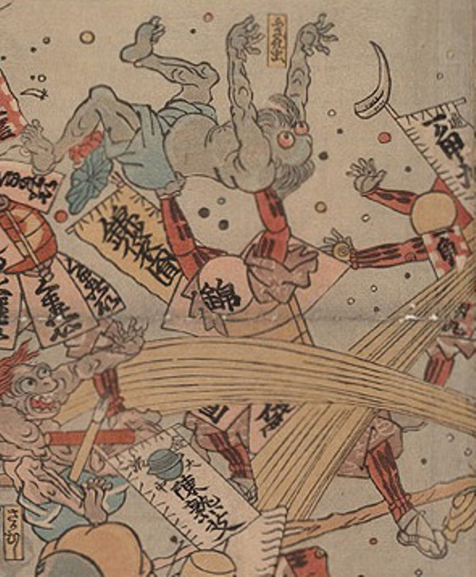

病気；ビョウキ，疫神；エキシン，ふさぎ虫；フサギムシ

錦袋円という薬が擬人化した化物に、ふさぎ虫の化物が投げ飛ばされようとしている。ふさぎ虫は両目が飛び出し、ひげを生やしている。肌は灰色で青い腰巻を着けている。
著作者：歌川芳虎／出典：親書誌：U426_nichibunken_0012：諸病諸薬の戦い；ショビョウショヤクノタタカイ／日付：2006／資源識別子：U426_nichibunken_0012_0002_0000
Copyright (c)2010- International Research Center for Japanese Studies, Kyoto, Japan. All rights reserved.